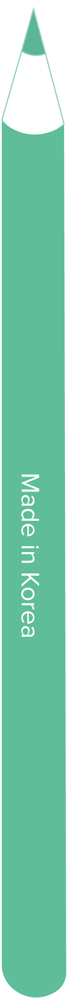

Front-end Developer


-
15 October 2022
Event Loop
To understand event loops, I looked at the concept of process and thread, JS’s runtime environment, the browser’s runtime environment, and how they can work together. I also learned the difference between microtaskqueue and taskqueue.
-
14 October 2022
Critical rendering path
I studied render tree-layout-paint-composition, an important concept to find out how to render in a browser. As a result, I was able to think about performance improvements by checking the representative properties of layout and paint.
-
31 May 2022
Event delegation
Through a simple menu example, I looked at the differences between applying addEventlistener as a for loop and using event delegation for the parent element of the menu, and how we could improve performance through event delegation.
-
31 May 2022
How not to get ChildNode
I discovered some solutions for the problem of how to get a parent node if a childNode is taken while using the event target in the menu example.
-
30 May 2022
Bubbling and capturing
I looked at the flow of events in the browser and how they can be handled to prevent events from spreading to higher-level elements.
-
24 May 2022
What does return do
When I first learned JS, the return keyword within functions was difficult to understand. After finally understanding return, I wrote a blog article on Naver, which is kind of like Korea’s Google. I covered when to use return and where it’s printed. My blog post is now the top search result when searching for the JS return role on Naver.
-
30 May 2022
Keyboard events
When I studied keyboard events, I wanted to make an interactive game with the keyboard key value. Therefore I made the Killing Monster game, applying what I had learned about keyboard events.
-
22 August 2022
PWA Builder Image Error
The PWA builder kept failing to publish the file. The problem was that your_pwa zip file was missing, and quite a few people couldn't find a solution. So I found and shared a solution to how to passively apply the missing content in VSCode.